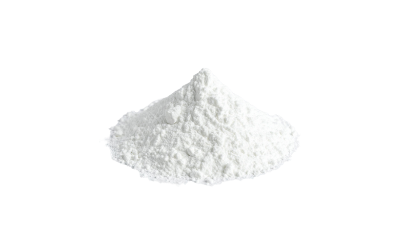
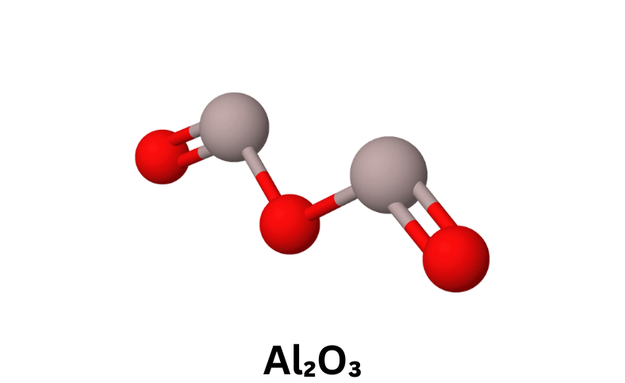

Our COA specific Alumina (Aluminum Oxide) for ceramics, refractories, abrasives and more industrial applications
EC Number
215-691-6
Molecular Weight
101.96 g/mol
Purity
65% - 99.99% (upto 5N)
Packaging
25 / 50 / 500 / 1000 kg
MOQ
1 T.E.U. (FCL)
Customization (incl. but not limited to)
for Grades / Forms / Specifications / Properties / Packaging available on request
Common Names
Aluminum Oxide / Aloxite / Alundum / Corundum /
Dialuminium Trioxide / Aluminium Sesquioxide
Appearance ; Odor
White / Off-white Powder
; odorless
Industrial Category ; Chemical Class
Metallurgical Raw Material / Refractory Material / Abrasive /
Advanced Ceramic Material / Electronic & Battery Material /
Adsorbent & Desiccant ;
Inorganic Oxide
Forms
Powder / Granular / Lumps /
Grit / Beads / Tablets
IUPAC Name
Aluminium Oxide
Alumina (Al₂O₃) is a versatile inorganic material widely used across metallurgical, refractory, ceramic, chemical, and advanced technology industries due to its high purity, hardness, thermal stability, and chemical inertness. It is engineered to deliver consistent performance in applications ranging from metal production and high-temperature processing to precision ceramics, abrasives, and surface finishing.
With controlled chemical composition, particle size distribution, and physical properties, alumina also plays a critical role in adsorption, filtration, and catalytic processes, as well as in flame retardant systems and advanced applications such as electronics and energy storage. Manufactured under stringent quality standards using ASTM, ISO, and validated in-house methods, it ensures reliability, consistency, and suitability for diverse industrial requirements.
Our alumina grades are engineered for performance-critical applications across metallurgical, refractory, ceramic, chemical, and advanced technology industries.
| Grade | Al₂O₃ (%) | Key Impurities | Form | Applications |
|---|---|---|---|---|
| Metallurgical | 98.5 - 99.0% |
Na₂O: 0.30–0.50% SiO₂: 0.02–0.08% Fe₂O₃: 0.01–0.05% Others: <0.05% |
Coarse powder | Primary raw material for aluminium production via Hall-Héroult process; used in smelters, refineries, and metal processing industries |
| Smelter | 98.5 - 99.0% |
Na₂O: ≤ 0.10% SiO₂: 0.01–0.05% Fe₂O₃: 0.01–0.03% Others: <0.03% |
Fine powder | Controlled feedstock for electrolytic aluminium production; optimized for high-efficiency smelting and electrolysis systems |
| Refractory | 95 - 99.5% |
Na₂O: 0.10–0.50% SiO₂: 0.05–0.30% Fe₂O₃: 0.02–0.10% CaO/MgO: 0.05–1.0% |
Lumps / Bricks | Refractory linings, furnace bricks, kiln furniture, and high-temperature insulation in steel, cement, and glass industries |
| Tabular | ~99.5% |
Na₂O: 0.04–0.30% SiO₂: 0.02–0.05% Fe₂O₃: 0.02–0.08% CaO: 0.01–0.03% |
Dense sintered grit | High-performance refractory castables, kiln linings, slide gates, and wear-resistant components in extreme temperature environments |
| White Fused | ≥ 99.0% |
Na₂O: 0.10–0.30% SiO₂: 0.02–0.10% Fe₂O₃: 0.01–0.05% TiO₂: 0.01–0.03% |
Abrasive grit | Precision grinding wheels, abrasive blasting media, surface preparation, and polishing of metals and engineered components |
| Ceramic | ~99% |
Na₂O: 0.05–0.20% SiO₂: 0.02–0.10% Fe₂O₃: 0.01–0.05% Others: <0.05% |
Fine powder | Advanced ceramics, electrical insulators, substrates, spark plug bodies, and wear-resistant technical components |
| Polishing | 99.2 - 99.5% |
Na₂O: 0.30–0.50% SiO₂: 0.01–0.05% Fe₂O₃: 0.005–0.03% Others: <0.02% |
Ultrafine powder | Optical glass polishing, semiconductor wafer finishing, precision lapping, and surface finishing in electronics and optics industries |
| Trihydrate | ~65% Al₂O₃ |
Na₂O: 0.20–0.40% SiO₂: 0.005–0.02% Fe₂O₃: 0.003–0.01% Others: <0.02% |
White powder | Flame retardant filler in plastics, rubber, cables, paints, and coatings; enhances fire resistance and smoke suppression |
| Flame Retardant | ~65% |
Na₂O: 0.20–0.40% SiO₂: 0.005–0.02% Fe₂O₃: 0.003–0.01% Others: <0.02% |
Powder | Fire-resistant fillers for wire & cable insulation, polymer compounds, construction materials, and industrial coatings |
| High Purity | ≥ 99.99% |
Na: <10 ppm Si: <10 ppm Fe: <5 ppm Total: <50 ppm |
Ultrafine / Tablets | LED substrates, sapphire crystal growth, semiconductors, optical components, and high-end electronic applications |
| Battery Grade | ≥ 99.99% |
Na: <5 ppm Fe: <5 ppm Si: <10 ppm Others: <20 ppm |
Submicron Powder | Coatings for lithium-ion battery separators, cathode materials, and advanced energy storage systems |
| Activated | ~94% |
Na₂O: 0.30–0.50% SiO₂: 0.02–0.10% Fe₂O₃: 0.02–0.05% Others: <0.05% |
1–8 mm spheres | Desiccants for air drying, gas dehydration, catalyst carriers, and adsorption in petrochemical and gas processing industries |
| Water Treatment | ~94% |
Na₂O: 0.30–0.50% SiO₂: 0.02–0.10% Fe₂O₃: 0.02–0.05% Others: <0.05% |
4–8 mm beads | Removal of fluoride, arsenic, and contaminants in drinking water, wastewater treatment, and industrial filtration systems |
Our alumina grades are tested using ASTM, ISO, and in-house validated analytical methods to ensure consistent purity, particle distribution, and performance across industrial applications.
| Parameter | Method | Specification |
|---|---|---|
| Appearance | Visual Inspection | White crystalline powder / granules |
| Al₂O₃ Content | ASTM E1621 – X-Ray Fluorescence (XRF) |
Metallurgical: ≥ 98.5% Tabular / Fused: ≥ 99.2–99.7% High Purity: ≥ 99.99% |
| Sodium Oxide (Na₂O) | ASTM E1479 – Inductively Coupled Plasma (ICP-OES) |
Smelter Grade: 0.3 – 0.6% Low Soda Grades: ≤ 0.05% |
| Loss on Ignition (LOI) | ASTM C25 – Gravimetric Analysis |
Alumina Trihydrate (ATH): 34 – 35% Calcined Grades: ≤ 0.5% |
| Particle Size (D50) | ASTM B822 – Laser Diffraction Particle Size Analysis |
Abrasive: 0.5 – 150 µm Ceramic: 1 – 10 µm ATH: 5 – 100 µm |
| Specific Surface Area | ASTM D3663 – BET Surface Area (Nitrogen Adsorption) |
Activated Alumina: 150 – 350 m²/g Calcined: 1 – 10 m²/g |
| Bulk Density | ASTM B527 – Tap Density Measurement |
Tabular Alumina: 3.4 – 3.6 g/cm³ Activated Alumina: 0.6 – 0.9 g/cm³ |
| Porosity | ASTM C20 – Apparent Porosity by Liquid Immersion |
Activated Alumina: 40 – 50% Tabular Alumina: ≤ 5% |
| Whiteness Index | ASTM E313 – Whiteness Index Measurement | ≥ 90% (Ceramic / Polishing Grades) |
| Hardness (Mohs) | ASTM C1327 – Scratch Hardness Test | 9 (Fused & Abrasive Grades) |
| Thermal Stability | ASTM C113 – High Temperature Resistance Test | Up to 1700°C (Refractory Grades) |
| Water Adsorption Capacity | ASTM D3860 – Water Vapor Adsorption | ≥ 20% by weight (Activated Alumina) |
| pH Value | ASTM D4972 – pH of Aqueous Slurry | 6.5 – 8.5 |
| Property | Metallurgical Grade | Activated Alumina | Tabular / Refractory | High Purity Alumina |
|---|---|---|---|---|
| Appearance | White powder | White spherical beads / pellets | White dense granules | Ultra-fine white powder |
| Al₂O₃ Content (%) | 98.0 – 99.0 | 92 – 95 | 99.2 – 99.7 | ≥ 99.99 |
| Na₂O (%) | 0.3 – 0.6 | ≤ 0.3 | ≤ 0.1 | ≤ 0.01 |
| Bulk Density (g/cm³) | 0.9 – 1.1 | 0.6 – 0.9 | 3.4 – 3.6 | 0.5 – 0.8 |
| Specific Gravity | 3.2 – 3.5 | ~3.0 | 3.5 – 3.9 | 3.9 |
| Surface Area (m²/g) | 1 – 5 | 150 – 350 | <1 | 5 – 15 |
| Porosity (%) | ~30 – 40 | 40 – 50 | <5 | Low |
| Hardness (Mohs) | 8 – 9 | ~8 | 9 | 9 |
| Melting Point (°C) | ~2050 | ~2050 | ~2050 | ~2050 |
| Thermal Stability | Up to 1200°C | Up to 800°C | Up to 1700°C | High |
| Water Absorption | Low | High (≥ 20%) | Very Low | Low |
| pH (in slurry) | 7 – 9 | 6.5 – 8.5 | 7 – 8 | 6 – 7 |
High-purity alumina produced via the Bayer process, primarily used as feedstock for aluminium production. It offers controlled particle size, good flowability, and consistent chemical composition for efficient smelting operations.
Key Benefits: High purity, excellent flow characteristics, stable reduction efficiency in Hall–Héroult process.
Refined alumina optimized specifically for aluminium smelters, ensuring consistent dissolution behavior and minimal impurities for high current efficiency.
Key Benefits: High dissolution rate, low impurity levels, improved smelting efficiency.
High-performance alumina materials designed for refractory applications offer excellent heat resistance, chemical stability, and mechanical durability. Carefully controlled particle size distribution, purity, crystal structure, and surface characteristics ensure consistent quality across grades.
Key Benefits: Superior high-temperature resistance, tailored PSD, and strong chemical stability.
Sintered alpha-alumina with high density and low porosity, produced at very high temperatures for superior thermal and mechanical performance in refractories.
Key Benefits: High bulk density, excellent thermal shock resistance, low water absorption.
Electrically fused high-purity alumina with angular particles, widely used in abrasive and refractory applications due to its hardness and purity.
Key Benefits: High hardness, chemical stability, sharp cutting edges.
Fine, high-purity alumina powders engineered for advanced ceramic applications requiring high density and electrical insulation.
Key Benefits: High dielectric strength, excellent wear resistance, controlled sintering behavior.
Ultra-fine alumina powders designed for precision polishing and surface finishing of metals, glass, and semiconductor materials.
Key Benefits: High surface finish quality, controlled abrasion, minimal scratching.
Hydrated alumina used as a filler and flame retardant, releasing water upon heating to suppress flames and reduce smoke.
Key Benefits: Flame retardancy, low smoke emission, cost-effective filler.
Specially processed alumina (typically ATH-based) used in fire-resistant formulations for cables, coatings, and polymers.
Key Benefits: Halogen-free flame resistance, thermal stability, environmental safety.
Ultra-high purity alumina (4N–5N) used in advanced electronic and optical applications requiring minimal impurities.
Key Benefits: Extremely low impurity levels, high optical clarity, superior electrical insulation.
High-purity alumina tailored for lithium-ion battery applications, especially separator coatings for thermal stability and safety.
Key Benefits: Enhanced battery safety, thermal resistance, improved cycle life.
Porous alumina with high surface area, used as an adsorbent and desiccant in gas and liquid purification systems.
Applications: Excellent adsorption capacity, moisture removal, regenerability.
Activated alumina optimized for water purification, specifically for removal of fluoride, arsenic, and other contaminants.
Applications: Effective contaminant removal, safe drinking water treatment, long service life.
Alumina (Al₂O₃) is a non-flammable, chemically stable inorganic material. However, fine particles may generate dust which can cause mechanical irritation to eyes, skin, and respiratory tract. Proper industrial hygiene practices should be followed during handling.
Our alumina products are packed using high-quality, export-grade materials to ensure protection against moisture, contamination, and physical damage during transit and storage. Standard packaging options include multi-layer HDPE woven bags with inner liners for enhanced moisture resistance, as well as jumbo bags (FIBC) designed for bulk handling and efficient logistics.
For export shipments, all bags are securely palletized to ensure stability and ease of handling during loading, unloading, and transportation. Pallets are stretch-wrapped and/or shrink-wrapped with protective covering to prevent ingress of moisture and contamination.
The material is transported under controlled conditions to maintain product integrity from dispatch to delivery. Shipments are handled through reliable logistics partners, ensuring safe and timely delivery across domestic and international markets.
Packaging and logistics can be customized based on product grade, shipment volume, and destination requirements.
Our alumina product portfolio is aligned with modern sustainability practices, focusing on resource efficiency, energy optimization, and responsible lifecycle management across refining, processing, and end-use applications.

